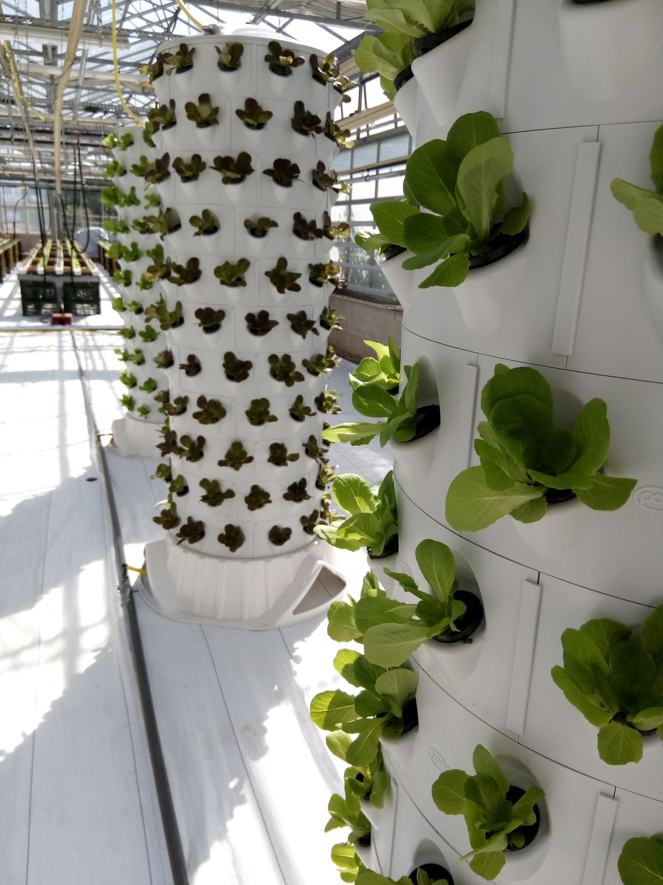
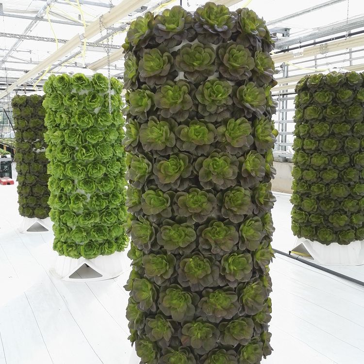
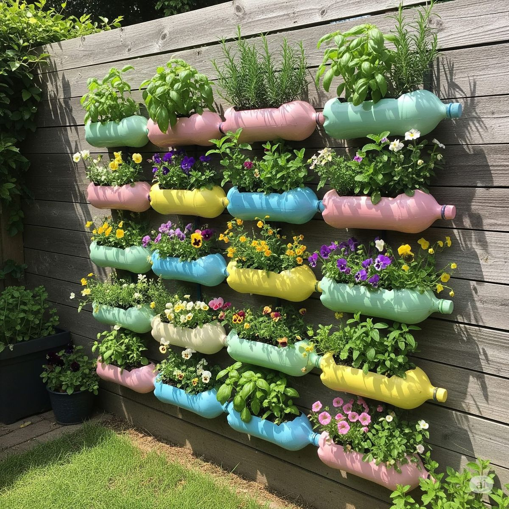
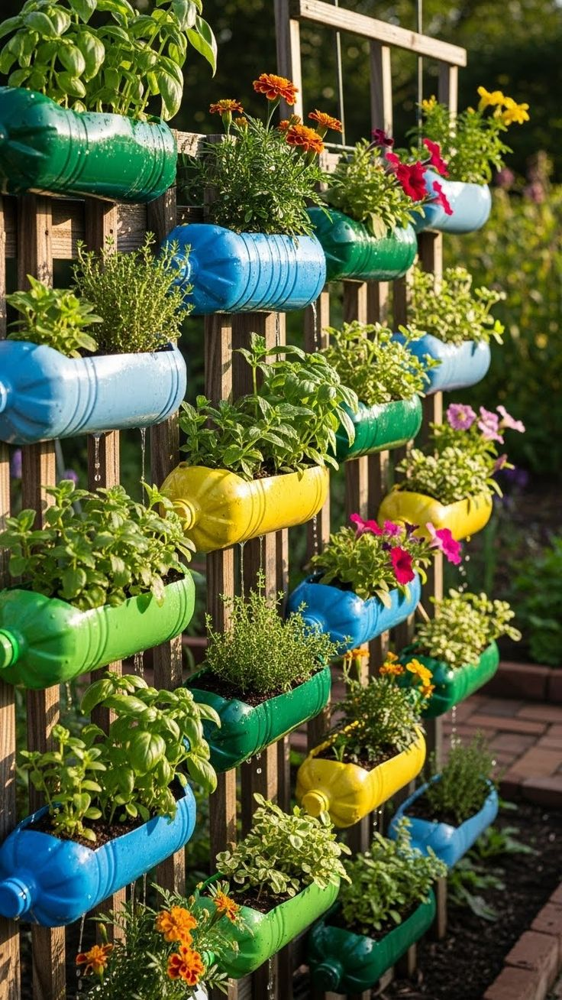

Historia de la Hidroponía
La hidroponía se remonta a civilizaciones antiguas como los Jardines Colgantes de Babilonia. En el siglo XX, se desarrolló científicamente para aplicaciones modernas en agricultura y jardinería.
Educación & Aprendizaje
Descubre cómo los insumos hidropónicos revolucionan la agricultura sostenible, permitiendo cultivos eficientes sin suelo y con un uso óptimo de recursos.
¿Qué es la Hidroponía?
La hidroponía es un método de cultivo que utiliza soluciones nutritivas acuosas en lugar de suelo, permitiendo un control preciso de los nutrientes y un crecimiento más rápido y eficiente de las plantas.
La hidroponía se remonta a civilizaciones antiguas como los Jardines Colgantes de Babilonia. En el siglo XX, se desarrolló científicamente para aplicaciones modernas en agricultura y jardinería.

Las plantas obtienen nutrientes directamente de una solución acuosa, eliminando la necesidad de suelo y permitiendo un reciclaje eficiente del agua.

Existen varios sistemas hidropónicos: NFT, DWC, aeropónicos, entre otros, cada uno adaptado a diferentes necesidades de cultivo.

La hidroponía reduce el uso de agua hasta un 90% y elimina la necesidad de pesticidas, contribuyendo a una agricultura más sostenible.
Insumos Esenciales
Los insumos hidropónicos include nutrientes, sustratos, sistemas de riego y equipos de control. Aprende sobre cada uno para optimizar tus cultivos.

Mezclas balanceadas de macronutrientes (NPK) y micronutrientes esenciales como hierro, manganeso y zinc. Deben ajustarse según la etapa de crecimiento de las plantas para maximizar el rendimiento.

Materiales como perlita, vermiculita, lana de roca o coco proporcionan soporte físico a las raíces sin aportar nutrientes, facilitando el drenaje.

Bombas, tuberías y temporizadores que distribuyen la solución nutritiva de manera uniforme, asegurando que todas las plantas reciban los nutrientes necesarios.

Medidores de pH, EC (conductividad eléctrica) y termómetros para mantener las condiciones óptimas y prevenir problemas en el cultivo.
Ventajas
Los insumos hidropónicos ofrecen múltiples beneficios: mayor eficiencia en el uso de agua y nutrientes, cultivos más rápidos y productivos, reducción de plagas y enfermedades, y la posibilidad de cultivar en espacios urbanos o desérticos. Adoptar estos insumos no solo mejora la agricultura, sino que también contribuye a la sostenibilidad global y la seguridad alimentaria.
Aprende Más
Explora guías, tutoriales y cursos para profundizar en el mundo de la hidroponía y el uso correcto de insumos hidropónicos.

Tutoriales paso a paso para configurar tu primer sistema hidropónico y seleccionar los insumos adecuados.

Aprende sobre nutrición avanzada, automatización y escalado de sistemas hidropónicos para agricultura comercial.
Únete a foros y grupos de hidroponía para compartir experiencias y resolver dudas sobre insumos y técnicas.
Ubicación
Visítanos para conocer más sobre nuestras soluciones de cultivo sostenible y acciones a favor del medio ambiente.